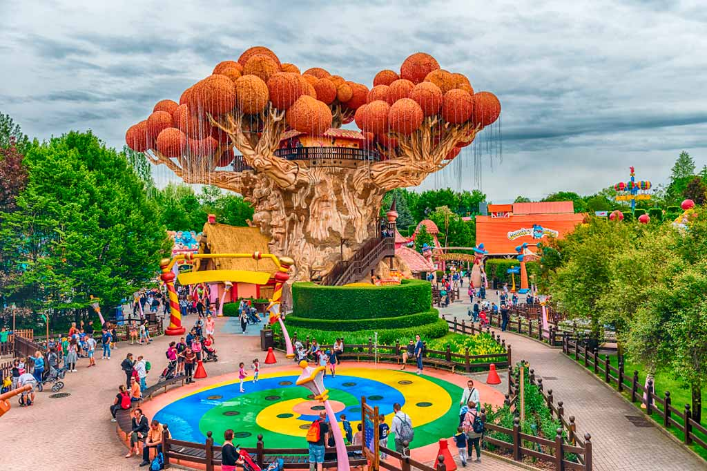

ACQUARDENS

Aquardens è un parco termale immerso nella Valpolicella, a pochi chilometri dal Lago di Garda: Aquardens è un vero e proprio susseguirsi di vasche lagune, grotte e cascate.
È adatto a tutti: famiglie, coppie e giovani compagnie.
Come arrivare ad Aquardens in auto?
Si trova 20 minuti da Verona, a Santa Lucia di Pescantina.
Come arrivare ad Aquardens in autobus?
➤ La soluzione più economica per arrivare da Stazione Porta Nuova ad Aquardens è linea 101 bus e impiega un’ora e 7 minuti. Potete arrivare fino alla fermata di Santa Lucia di Pescantina e potete proseguire a piedi 1,1 km (14 minuti).
➤ Oppure la linea 102 bus impiega un’ora e 18 minuti, potete arrivare fino alla fermata di Domegliara Campo Sportivo e potete proseguire a piedi 1,6 km (19 minuti).
➤ Oppure la linea 173 bus impiega un’ora, potete arrivare fino alla fermata di Ospedaletto e potete proseguire a piedi 1,7 km (20 minuti)
CANEVAWORLD

Canevaworld è il parco acquatico di Lazise, composto da acquascivoli, piscine e attrazioni per tutte le età, spiagge per rilassarsi ed area ristoro: tappa irrinunciabile per chi vuole trascorrere una giornata d’avventura senza rinunciare al rinfrescante tuffo in piscina.
Da divertenti discese con galleggianti a emozionanti salti nel vuoto, è questo il parco acquatico perfetto per chi ama gli scivoli.
Come arrivare a Canevaworld in auto?
➤ Per chi proviene da Milano sull’autostrada A4 Milano-Venezia: Uscita di Peschiera del Garda
➤ Per chi proviene da Venezia sull’autostrada A4: Uscita di Peschiera del Garda
➤ Per chi proviene da Bologna sull’autostrada A22: Uscita di Peschiera del Garda
➤ Per chi proviene da Trento sull’autostrada A22: Uscita di Affi
Come arrivare a Canevaworld in treno?
Da qualsiasi stazione in Italia prendere il treno per Verona e poi raggiungere Peschiera del Garda. Il parco dista circa 2 Km dalla stazione di Peschiera del Garda (linea Trenord Milano-Brescia-Verona o linea Trenitalia Milano-Venezia).
La Stazione Ferroviaria di Peschiera del Garda è collegata a Canevaworld con un servizio (andata-ritorno) di bus navetta gratuito. È prevista una corsa ogni 30 minuti durante tutto l’orario di apertura Parco.
Come arrivare a Canevaworld in autobus?
La soluzione più economica per arrivare da Stazione Porta Nuova a Canevaworld è linea 164 bus e impiega un’ora. Potete arrivare fino alla fermata di Fossalta e potete proseguire a piedi 350 metri.
GARDALAND

Gardaland è uno dei parchi di divertimento più grandi ed apprezzati d’Italia e il terzo parco divertimenti in Europa, si trova nel comune di Castelnuovo del Garda in provincia di Verona. È un parco molto vasto con numerose attrazioni e diverse aree tematiche distribuite tra Gardaland Park, Gardaland Sea-Life, Gardaland Resort e Legoland Water Park.
Come arrivare a Gardaland in auto?
➤ Per chi proviene da Milano sull’autostrada A4 Milano-Venezia: Uscita di Peschiera del Garda
➤ Per chi proviene da Venezia sull’autostrada A4: Uscita di Peschiera del Garda
➤ Per chi proviene da Bologna sull’autostrada A22: Uscita di Peschiera del Garda
➤ Per chi proviene da Trento sull’autostrada A22: Uscita di Affi
Come arrivare a Gardaland in treno?
Da qualsiasi stazione in Italia prendere il treno per Verona e poi raggiungere Peschiera del Garda. Il parco dista circa 2 Km dalla stazione di Peschiera del Garda (linea Trenord Milano-Brescia-Verona o linea Trenitalia Milano-Venezia).
La Stazione Ferroviaria di Peschiera del Garda è collegata a Gardaland con un servizio (andata-ritorno) di bus navetta gratuito. È prevista una corsa ogni 30 minuti durante tutto l’orario di apertura Parco.
Come arrivare a Gardaland in autobus?
La soluzione più economica per arrivare da Stazione Porta Nuova a Gardaland è linea 164 bus e impiega un’ora per arrivare fino alla fermata di Gardaland.
Il viaggio dura circa 42 minuti: i collegamenti partono ogni 4 ore tutti i giorni ed i biglietti possono essere fatti sia all’interno della stazione o nelle apposite macchinette poste sul marciapiede.